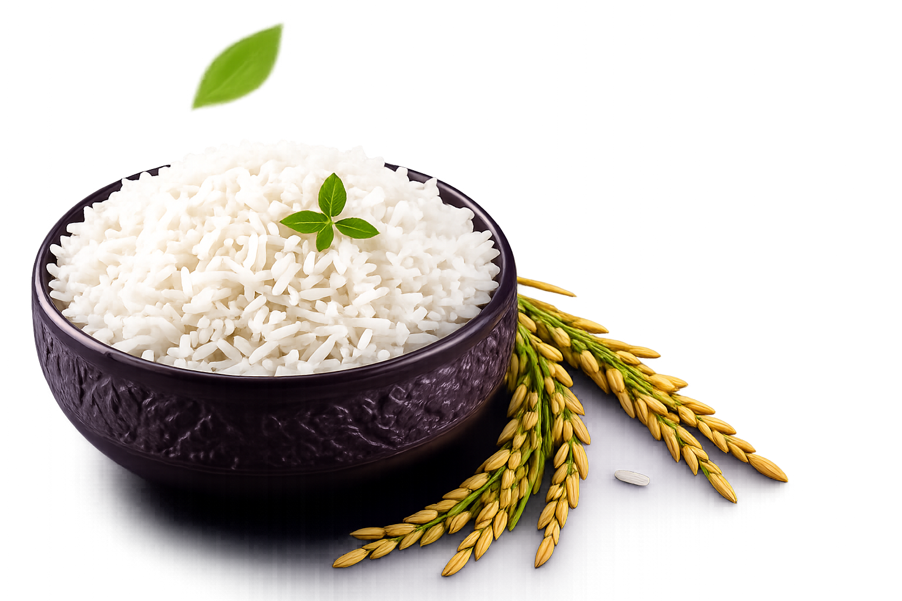
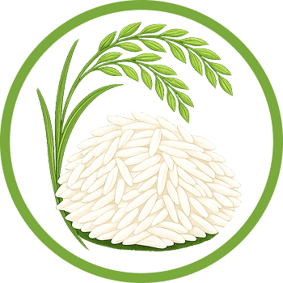
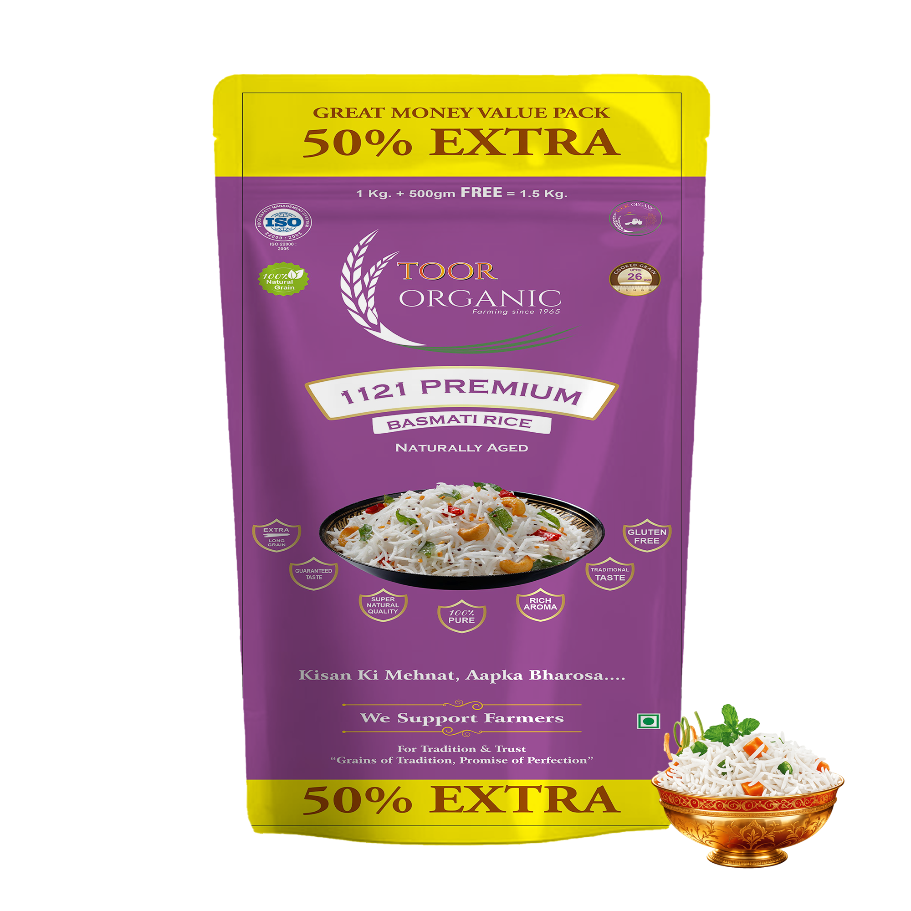
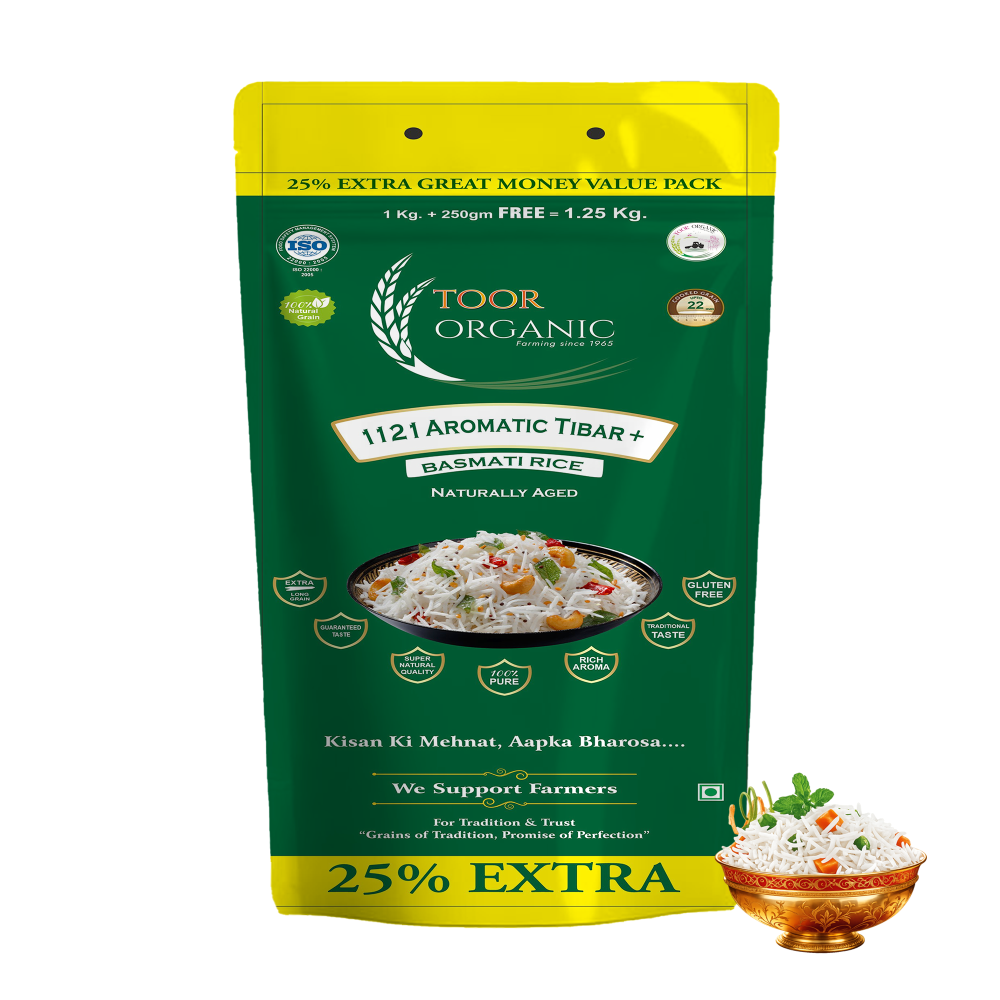
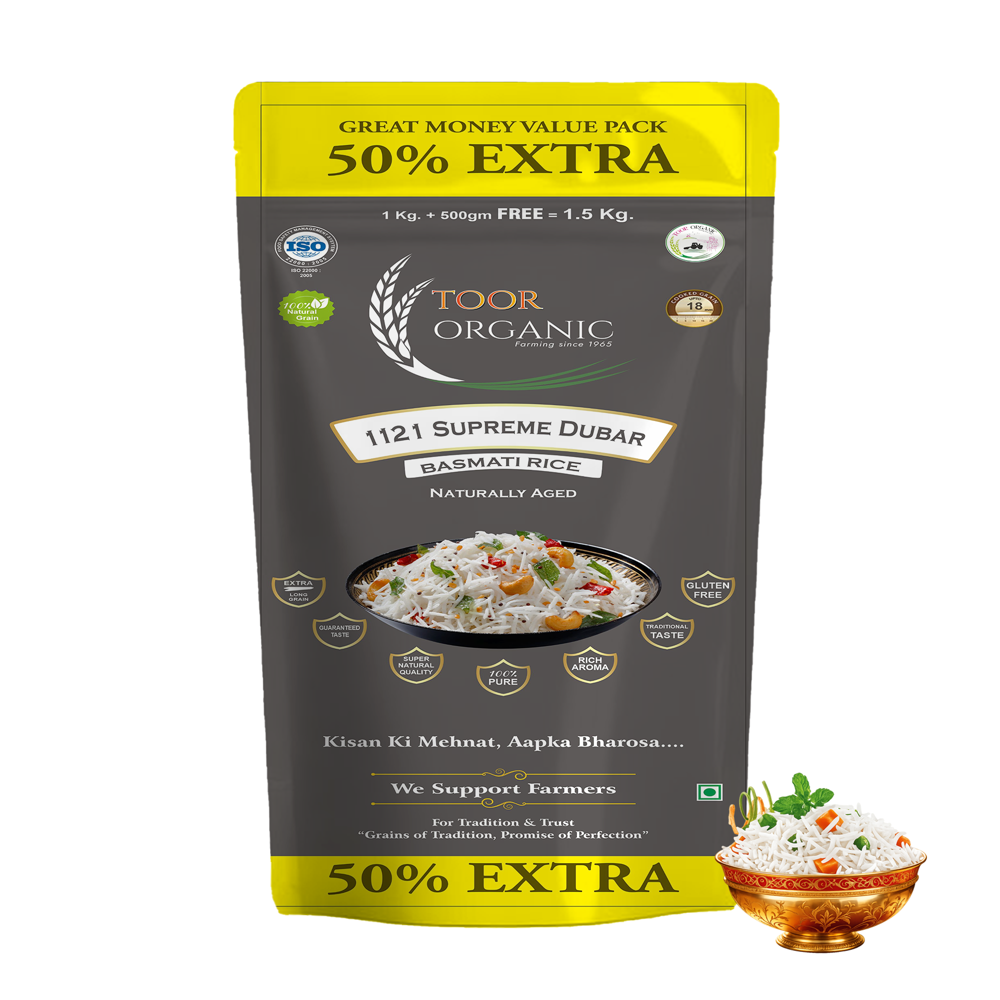
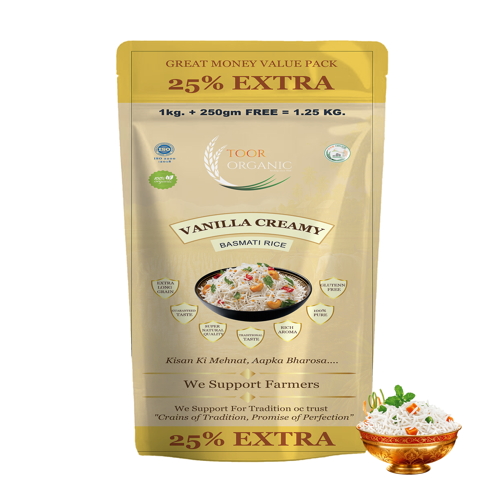
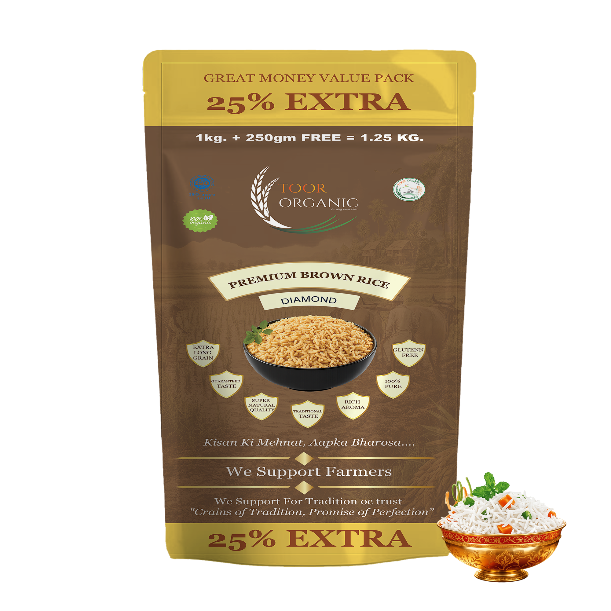

.png)

.png)
.png)
.png)
.png)

For more than five decades, Toor Organic has been dedicated to natural farming and delivering the purest organic rice to your table. We believe in healthy soil, happy farmers and a better tomorrow.
READ MORE
100% Premium Quality
Nutritious & Healthy
Value For Money
Certified Food

Extra Long Grain
At Toor Organic, we are committed to delivering naturally grown, high-quality Basmati rice that nourishes your lifestyle. Every product is processed with care and packed under strict hygiene standards to preserve its authentic aroma, flavor, and goodness.
Explore Our ProductsToor Organic
Premium Rice is known for its superior grain quality, better uniformity, natural aroma, and refined appearance. When cooked, the grains remain soft, flavorful, and more distinct, making it an excellent choice for pulao, biryani, special occasions, and guest meals.
READ MORE
Tibaar Rice offers a balanced combination of quality, taste, and value. It cooks soft and pleasant in texture, making it suitable for daily household cooking, khichdi, and traditional home-style meals.
READ MORE
Dubar Rice is a dependable choice for everyday cooking. It offers good quality, natural taste, and a soft texture after cooking. It is well suited for daily home meals such as rice with lentils, vegetables, and other traditional dishes.
READ MORE
Creamy vanilla delight Rice is carefully selected from quality grains to deliver a smooth texture, pleasant aroma, and naturally rich taste. Its soft and fluffy grains make every meal wholesome and satisfying.
READ MORE
Premium Brown Rice is a nutritious and wholesome option for everyday consumption. It retains the natural nutrients and fiber of brown rice, providing a healthy alternative to white rice.
READ MORE
Toor Organic Selection
We follow the highest safety and quality standards to deliver
pure, chemical-free and healthy products you can rely on.
Food Safety Management
System
Lic No. 12126999000105
Government Verified
Global Trade Approved
Trusted Manufacturing
"Served this to our guests during a family festival dinner, and everyone kept asking which rice brand I used! The texture is incredibly soft yet distinct, and it retains its moistness even hours after cooking. It has truly raised the standard of our festive hosting."
"Switched to this brand because we wanted 100% chemical-free organic rice for our kids. What surprised me is that usually, healthy organic variants don't taste as good, but this one is incredibly fluffy, soft, and fragrant. It’s perfect for our daily family meals."
"Extremely impressed with the neat, hygienic packaging. The bag keeps the freshness locked in completely. The grains are completely uniform, clean, and polished with zero debris or broken bits. Given the stellar premium quality, it is absolute value for money."
"The aroma of this rice filled our entire home the second it started boiling. You can truly tell the difference in purity compared to ordinary supermarket brands. It has that authentic, nostalgic fragrance of aged Basmati that is so hard to find these days. Will definitely be ordering regularly now."
"Switched to this brand because we wanted 100% chemical-free organic rice for our kids. What surprised me is that usually, healthy organic variants don't taste as good, but this one is incredibly fluffy, soft, and fragrant. It’s perfect for our daily family meals."
"We use their premium rice for light meals like Jeera rice and dal khichdi. Since the rice is naturally aged, it is very light on the stomach, fluffs up easily with very little oil, and digests beautifully. Highly recommended for fitness-conscious households."